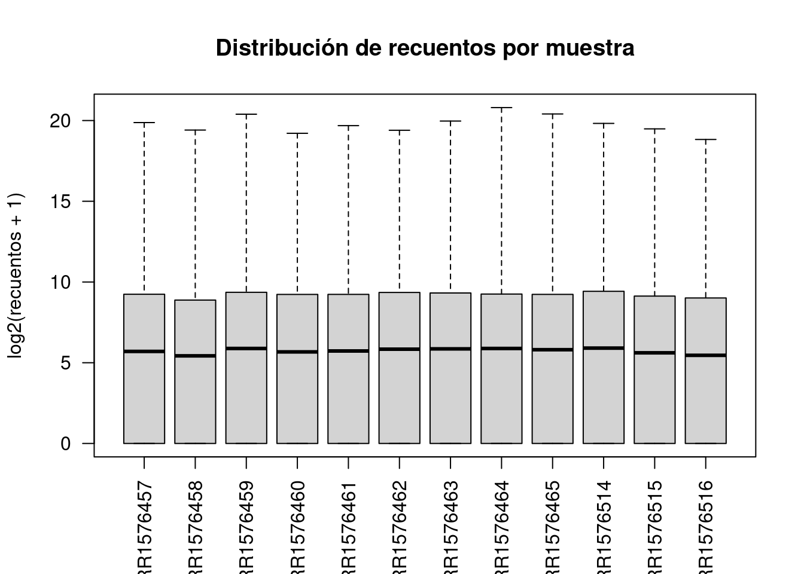
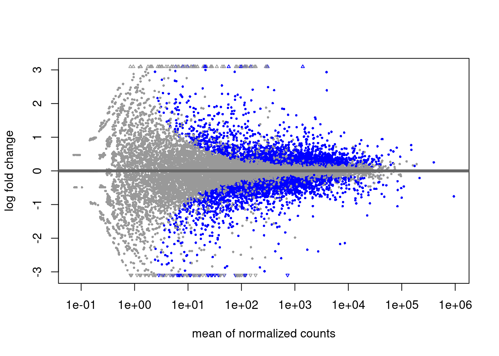
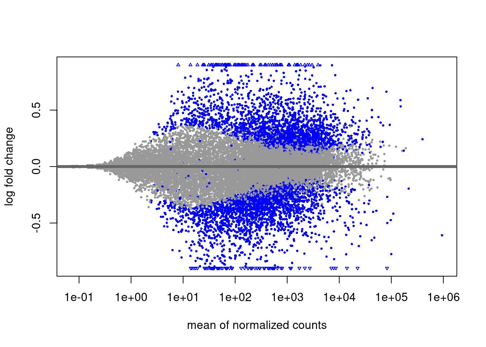

muestras <- read.table('../../data/dme_elev_samples.tsv', header = TRUE)
genex <- read.table('../../data/salmon.merged.gene_counts.tsv',
header = TRUE)Análisis de expresión diferencial
Datos
Utilizaremos las medidas de expresión génica del archivo salmon.merged.gene_counts.tsv. Los datos proceden de 12 genotecas de RNA-seq de lecturas emparejadas, de muestras de Drosophila melanogaster de dos orígenes geográficos (Panamá y Maine) y dos tratamientos de temperatura (low y high) (Zhao 2015). Hay 3 réplicas biológicas para cada combinación de región y temperatura. Si tenéis curiosidad sobre cómo se han obtenido los recuentos de lecturas por gen a partir de los archivos FASTQ, podéis consultarlo en este enlace.
Además, necesitáis el archivo dme_elev_samples.tsv, una tabla que indica a qué región y tratamiento pertenece cada muestra.
##Exploración de los datos
#Ejercicio 1
Recuerda dejar constancia en un bloque de código de cómo obtienes las respuestas.
Usa la función paste() para añadir una columna a muestras que contenga la población y la temperatura unidas por _.colnames(muestras)[1] "sample" "population" "temp" muestras$grupo <- paste(muestras$population, muestras$temp, sep = "_")head(muestras) sample population temp grupo
1 SRR1576457 maine low maine_low
2 SRR1576458 maine low maine_low
3 SRR1576459 maine low maine_low
4 SRR1576460 maine high maine_high
5 SRR1576461 maine high maine_high
6 SRR1576462 maine high maine_high¿Cuál es el número total de lecturas por muestra?genex <- read.table('../../data/salmon.merged.gene_counts.tsv',
header = TRUE, row.names = 1)
total_reads <- colSums(genex)Error in colSums(genex): 'x' must be numeric or complextotal_readsError: object 'total_reads' not foundhead(genex) gene_name SRR1576457 SRR1576458 SRR1576459 SRR1576460
FBgn0000003 7SLRNA:CR32864 478.000 0.000 244.815 429.737
FBgn0000008 a 653.000 483.000 691.000 575.999
FBgn0000014 abd-A 536.000 414.001 563.000 587.000
FBgn0000015 Abd-B 615.000 562.000 703.001 681.001
FBgn0000017 Abl 1854.533 1381.783 1941.276 1815.993
FBgn0000018 abo 242.000 205.000 272.000 235.000
SRR1576461 SRR1576462 SRR1576463 SRR1576464 SRR1576465 SRR1576514
FBgn0000003 333.000 956.000 638.000 0.000 348.000 532.000
FBgn0000008 497.000 577.000 671.000 606.000 579.001 507.000
FBgn0000014 496.000 565.000 578.000 645.000 522.000 571.000
FBgn0000015 611.000 703.000 725.999 712.001 660.999 654.000
FBgn0000017 1646.271 1857.078 2012.120 1666.408 1623.621 1558.945
FBgn0000018 208.000 276.000 275.000 252.000 236.000 260.000
SRR1576515 SRR1576516
FBgn0000003 55.615 333.000
FBgn0000008 429.000 472.000
FBgn0000014 475.000 502.000
FBgn0000015 494.999 572.001
FBgn0000017 1274.236 1455.402
FBgn0000018 238.000 211.000genex_numeric <- genex[, sapply(genex, is.numeric)]
total_reads <- colSums(genex_numeric)
total_readsSRR1576457 SRR1576458 SRR1576459 SRR1576460 SRR1576461 SRR1576462 SRR1576463
28252778 21565448 29471559 27692134 26953900 29368135 29706071
SRR1576464 SRR1576465 SRR1576514 SRR1576515 SRR1576516
26757043 26596118 30950499 25563787 24401671 El número total de lecturas por muestra se obtuvo mediante la suma de los recuentos de cada columna de la matriz de expresión génica (colSums). Los valores obtenidos muestran que los tamaños de biblioteca son comparables entre muestras, oscilando entre aproximadamente 21,6 y 31,0 millones de lecturas. En concreto, las muestras presentan los siguientes totales: SRR1576457 (28.252.778), SRR1576458 (21.565.448), SRR1576459 (29.471.559), SRR1576460 (27.692.134), SRR1576461 (26.953.900), SRR1576462 (29.368.135), SRR1576463 (29.706.071), SRR1576464 (26.757.043), SRR1576465 (26.596.118), SRR1576514 (30.950.499), SRR1576515 (25.563.787) y SRR1576516 (24.401.671). Esta variabilidad es esperable en datos de RNA-seq y será tenida en cuenta mediante métodos de normalización en análisis posteriores.
¿Los recuentos tienen distribuciones parecidas entre muestras?boxplot(log2(genex_numeric + 1),
las = 2,
main = "Distribución de recuentos por muestra",
ylab = "log2(recuentos + 1)")
Las distribuciones de los recuentos génicos entre muestras se evaluaron mediante la representación de boxplots en escala logarítmica (log₂ de los recuentos + 1). Se observa que las distribuciones son en general similares entre todas las muestras, tanto en forma como en dispersión, lo que indica que no existen sesgos técnicos importantes ni desviaciones marcadas entre genotecas. Aunque se aprecian ligeras diferencias en la posición de las medianas, estas son coherentes con las variaciones en el tamaño de biblioteca observadas previamente y pueden corregirse mediante normalización en etapas posteriores del análisis. ¿Cuántos genes no se expresan en absoluto en ninguna de las muestras?
genes_no_exp <- sum(rowSums(genex_numeric) == 0)
genes_no_exp[1] 4722El número de genes que no se expresan en ninguna de las muestras se determinó calculando la suma de recuentos por gen y seleccionando aquellos con valor cero en todas las muestras (rowSums == 0). Se identificaron un total de 4722 genes sin expresión detectable en el conjunto de datos. Estos genes no aportan información para el análisis de expresión diferencial y, por tanto, podrían ser excluidos en etapas posteriores de filtrado.
Crear el objeto de clase DESeqDataSet
suppressMessages(library('DESeq2'))
all(names(genex)[3:14] == muestras$sample)[1] FALSE# Pasamos la columna "sample" a nombres de fila:
row.names(muestras) <- muestras$sample
# Eliminamos la columna "sample":
muestras$sample <- NULL
# Y convertimos "population" y "temp" en factores:
muestras$population <- factor(muestras$population,
levels = c('maine', 'panama'))
muestras$temp <- factor(muestras$temp,
levels = c('low', 'high'))
muestras population temp grupo
SRR1576457 maine low maine_low
SRR1576458 maine low maine_low
SRR1576459 maine low maine_low
SRR1576460 maine high maine_high
SRR1576461 maine high maine_high
SRR1576462 maine high maine_high
SRR1576463 panama low panama_low
SRR1576464 panama low panama_low
SRR1576465 panama low panama_low
SRR1576514 panama high panama_high
SRR1576515 panama high panama_high
SRR1576516 panama high panama_highrow.names(genex) <- genex$gene_name
genex$gene_name <- NULL
genex$gene_id <- NULL
genex <- round(as.matrix(genex))dds1 <- DESeqDataSetFromMatrix(
countData = genex,
colData = muestras,
design = ~ population + temp
)converting counts to integer modedds1class: DESeqDataSet
dim: 24254 12
metadata(1): version
assays(1): counts
rownames(24254): 7SLRNA:CR32864 a ... RR51477 Bari1{}RR51478
rowData names(0):
colnames(12): SRR1576457 SRR1576458 ... SRR1576515 SRR1576516
colData names(3): population temp grupoPre-filtrado
keep <- rowSums(counts(dds1)) > 0
dds1 <- dds1[keep, ]Expresión diferencial
dds1 <- DESeq(dds1)estimating size factorsestimating dispersionsgene-wise dispersion estimatesmean-dispersion relationshipfinal dispersion estimatesfitting model and testingres <- results(dds1)
reslog2 fold change (MLE): temp high vs low
Wald test p-value: temp high vs low
DataFrame with 19508 rows and 6 columns
baseMean log2FoldChange lfcSE stat pvalue
<numeric> <numeric> <numeric> <numeric> <numeric>
7SLRNA:CR32864 346.333 0.5918974 1.3301901 0.444972 0.656339979
a 555.596 -0.2730041 0.0718487 -3.799710 0.000144866
abd-A 531.996 -0.0286785 0.0789218 -0.363379 0.716321732
Abd-B 634.760 -0.1083918 0.0771241 -1.405421 0.159896272
Abl 1654.842 -0.1328055 0.0746580 -1.778851 0.075264257
... ... ... ... ... ...
RR51007 4.90906 3.8596869 2.972471 1.2984773 1.94123e-01
RR51048 16.60710 -0.8973071 0.341603 -2.6267541 8.62036e-03
RR51093 36.93279 0.0660523 1.685323 0.0391927 9.68737e-01
RR51475 159.62678 -2.6058194 1.875172 -1.3896429 1.64637e-01
RR51477 70.83394 1.6927986 0.192437 8.7966393 1.40975e-18
padj
<numeric>
7SLRNA:CR32864 0.81170166
a 0.00154573
abd-A 0.85146289
Abd-B 0.33849217
Abl 0.20046220
... ...
RR51007 3.82417e-01
RR51048 4.01745e-02
RR51093 9.84464e-01
RR51475 3.44815e-01
RR51477 2.06427e-16Ejercicio 3
Mira la ayuda de results() y genera también la tabla de resultados para el contraste entre las dos regiones de procedencia de las moscas.
Usa summary() sobre los resultados para ver el número de genes diferencialmente expresados entre cada par de condiciones.
¿Cuál es la tasa de falsos positivos (FDR)?Gráficas
plotMA(res)
resShrink <- lfcShrink(dds1, coef = 'temp_high_vs_low',
type = 'normal')using 'normal' for LFC shrinkage, the Normal prior from Love et al (2014).
Note that type='apeglm' and type='ashr' have shown to have less bias than type='normal'.
See ?lfcShrink for more details on shrinkage type, and the DESeq2 vignette.
Reference: https://doi.org/10.1093/bioinformatics/bty895plotMA(resShrink)
ggplot(data = resShrink,
mapping = aes(x = log2FoldChange, y = -log(pvalue), color = padj)) +
geom_point() Error in ggplot(data = resShrink, mapping = aes(x = log2FoldChange, y = -log(pvalue), : could not find function "ggplot"